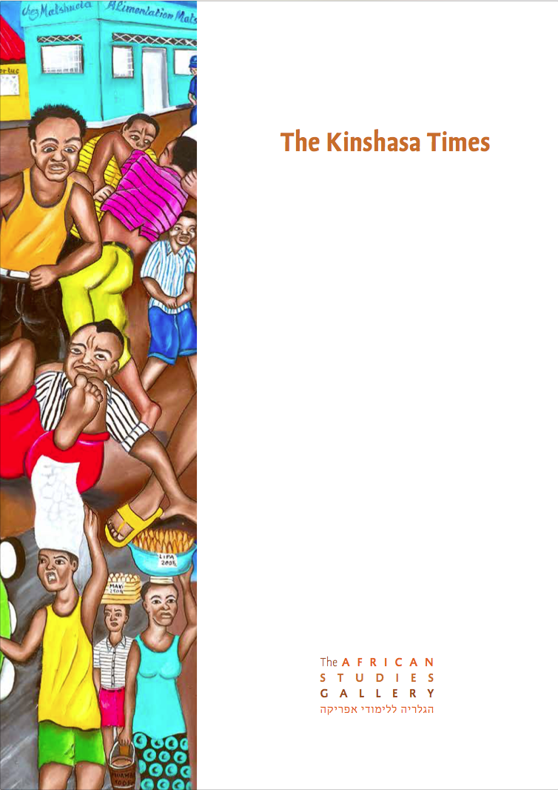

'…Mouyeké himself claims to be descended from great shamans, who can stop the rain from falling control the heat of the sun' '…Mouyeké himself claims to be descended from great shamans, who can stop the rain from falling control the heat of the sun' '…Mouyeké himself claims to be descended from great shamans, who can stop the rain from falling control the heat of the sun' '…Mouyeké himself claims to be descended from great shamans, who can stop the rain from falling control the heat of the sun'
read lessThis exhibition is of urban art, produced by self-taught artists, mainly from Kinshasa. During the past decade both museums and art markets have shown a growing interest in contemporary African art.
But what does ‘contemporary African art’ mean in this context? Does it mean art produced by Africans who live in the big urban centres of the continent, creating works in terms of Western taxonomies and sensibilities? Or is there room in this definition for a different kind of art, one that neither seeks nor meets the approval of Western establishments?
The works shown in this exhibition suggest that there is more to contemporary African art than mere alignment with Western preferences. Produced by self-taught artists mainly from Kinshasa, the works can be seen as a bridge between two of our recent exhibitions: The Congo River and Lava Almas. The first of these gave an insight into the traditional art of the region, while the second explored a different notion of contemporary African art through the work of the Luandan artist Toy Boy. Much like the traditional art, the paintings in The Kinshasa Times function as repositories of vital social and cultural information. At the same time, they are critical commentaries on contemporary life and culture in Congo (DRC), confronting troubling realities and treating their subjects with a diverting mixture of humour and compassion. All in all, the works do not fit comfortably into the normative Western understanding of art and its function in society.
Moreover, until recently art historians generally considered painting to be a Western implant, and therefore not original African art. As a result, little research has been done on modern and contemporary art in Africa; museums, art dealers and collectors considered these works as inauthentic, or as tourist ephemera, and consequently showed no interest.
Ever since its establishment, the African Studies Gallery has aimed to present the various expressions of the arts and cultures of the African continent. For this reason an exhibition dedicated to the popular urban art of Kinshasa is especially important to us. The inspiration for these works comes from the various social changes caused by urbanization, literacy and capitalism. Moreover, in a country that has spent more than 30 years under the authoritarian regime of Mobutu Sese Seko, who established a state monopoly on the press, and where the masses still perceive the newspapers, radio, and television as a magnified image of the ruling class, these popular paintings function as social chronicles. The painters share their daily lives with the subjects of their paintings and as such their point of view is firmly rooted in the life of the streets – even while their role as observers also detaches them from it. Their paintings speak as loudly as a pavement radio – broadcasting rumours, unofficial news and scandalous stories about local and national events.
Expressing social and political consciousness, the paintings’ artistic means are simple and direct; they are valued mainly for their ability to ‘tell a story’ and not as objects of aesthetic contemplation.
The exhibition is above all a cultural document, so excerpts from the 2010 novel Broken Glass by the Congolese author Alain Mabanckou have been interlaced with the paintings. The narrator, ‘Broken Glass’, is a regular customer at the bar ‘Credit Gone West’ and uses rhythmic language to tell the stories of the marginalized people who visit the bar. His stories paint a less familiar picture of contemporary urban Africa. The paintings are set against black and white photographs of Kinshasa that mimic the graininess of newsprint. Together, these three elements weave an animated and vibrant portrait of a reality that is in equal part amusing and distressing.
This exhibition was made possible due to the generosity of Mr Meir Levy. Mr Levy is resident of Congo and a passionate collector of Congolese popular art, about which he is very knowledgeable. After many years of collecting and personal acquaintance with the artists, he has assembled one of the richest and most intriguing collections of Congolese popular art in the entire world. We owe him special thanks.
Idit Toledano
Tel Aviv, 2015
catalogue
see related articles/news